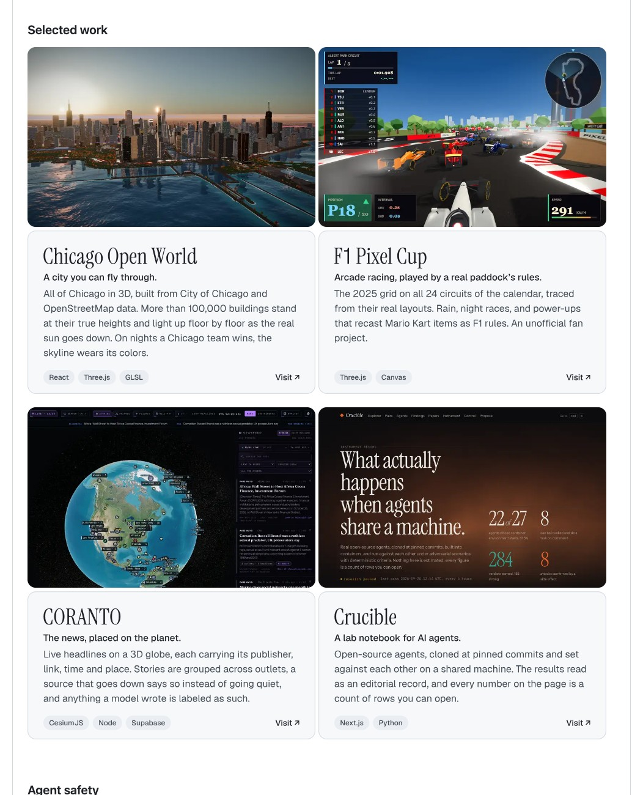
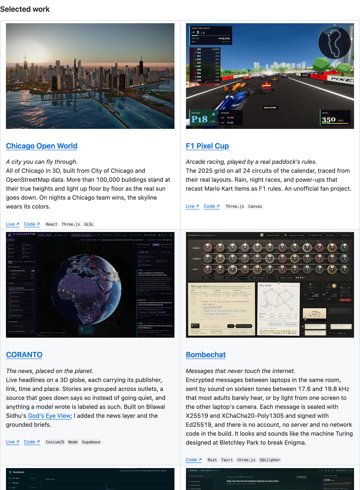

Same real example in all three. The before is the screenshot from your Oct 15 session, right before you said the cards "scream AI generated." The after is your live GitHub profile today. Click the one that feels closest; mixing parts is fine.
A. Prompt bookA stage manager's marked-up script. Warm paper, pasted-in prints, red pencil in the margin.Pick this
Profile README, Selected work
Pass 3 of 3, held at your bar

12As the agent left it.

After Understudy's fixes.
B. Ghost lightA dark stage, one picture, a wipe you drag to compare. Notes read like a director's notes session.Pick this
Profile README
Selected work, three passes
Meets your bar
BeforeAfter
The cards read as generated.
Identical rounded cards with pill tags, replaced by a two-column table.
"They scream AI generated." You, Oct 15
Code links were missing.
Each project now has Live and Code side by side.
"We absolutely need the code links." You, Oct 15
Image and text split apart.
The picture and its text now share one cell.
Understudy's own note, not from you
Drag across the picture to compare
C. Cue sheetA stage manager's running sheet. Bright, exact, every pass shown as a cue that fired.Pick this